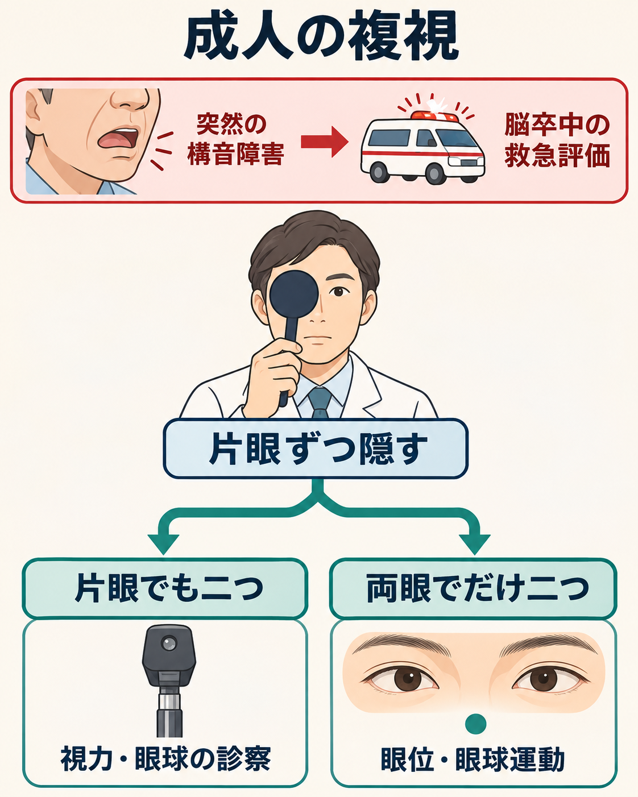

<!doctype html><html lang="ja"><meta charset="utf-8"><meta name="viewport" content="width=device-width, initial-scale=1"><title>成人の複視の初診</title><main style="max-width:1360px;margin:auto;font-family:system-ui,sans-serif;"><a href="overview.png" title="原寸画像を開く"></a><p>画像をクリック／タップすると原寸で開きます。</p><a href="../">スライド一覧へ</a></main></html>